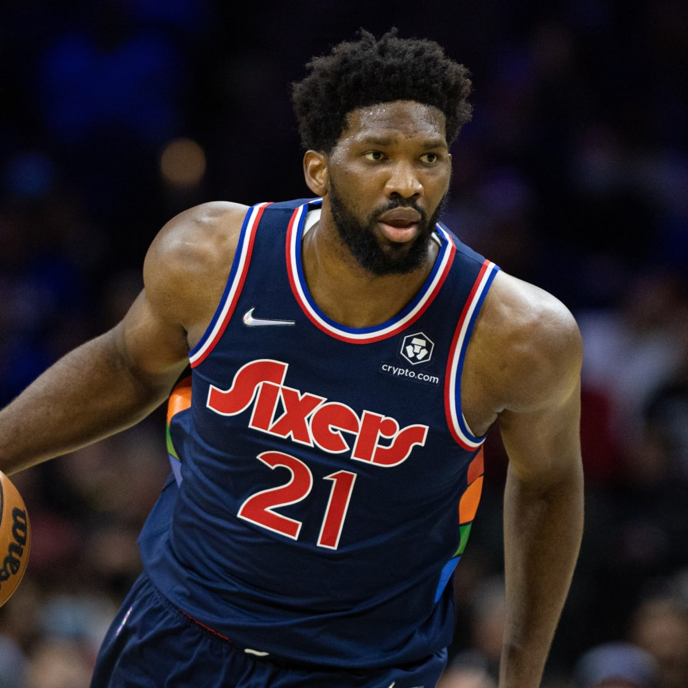

Joel Embiid entered the NBA in 2014 when he was drafted third overall by the Sixers. After being sidelined with injuries for the first two seasons of his career, he has become an MVP candidate and a five-time All-Star. Embiid was born in Cameroon in 1994.

It has an easy to override visual style, and is appropriately subdued.
Click here for videos!